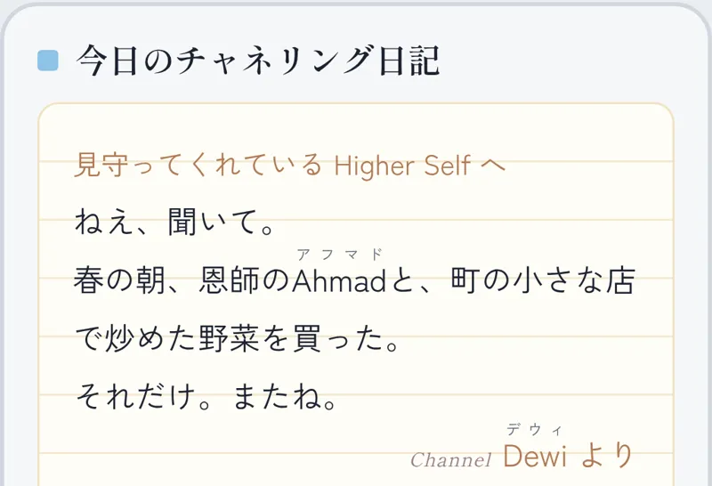
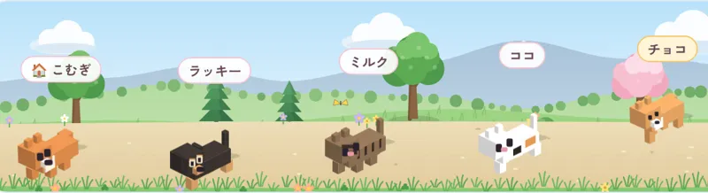
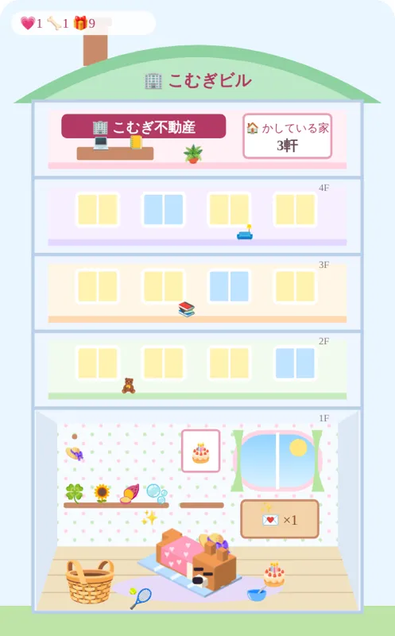
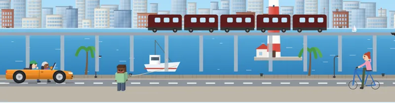
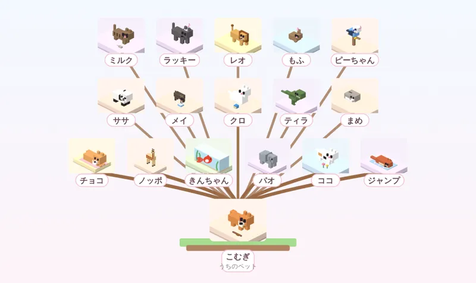
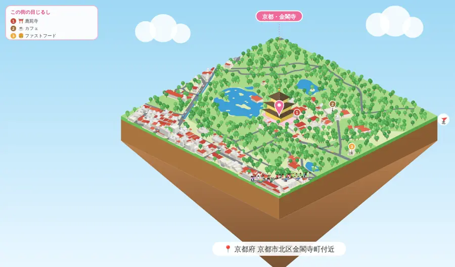
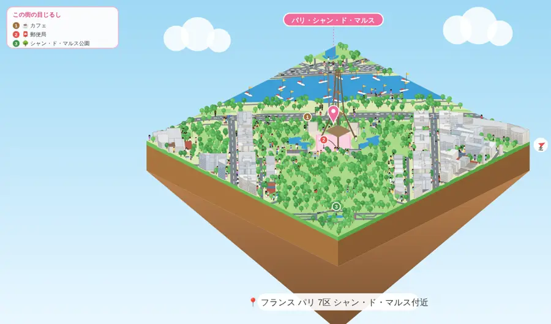
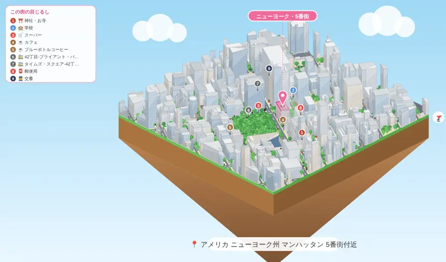
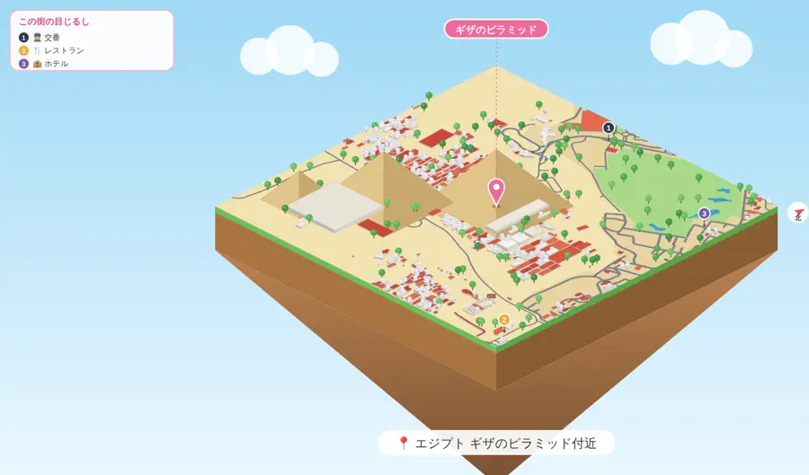
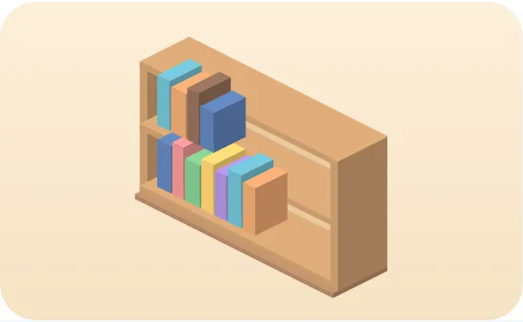

1世界189ヵ国のどこかに、生まれる
国も、家族も、名前も、生まれた日時も。世界の統計に沿って、偶然に決まります。生まれた人（Channel）は、自分で考え、自分で選び、人と出会いながら生きていきます。
189ヵ国の
どこかに
どこかに
2.5日で
1歳ずつ
1歳ずつ
6.5か月で
80歳まで
80歳まで
開くたびに、いろんな国の人生が流れてきます
ぜんぶ、スマホひとつで
国も、家族も、名前も、生まれた日時も。世界の統計に沿って、偶然に決まります。生まれた人（Channel）は、自分で考え、自分で選び、人と出会いながら生きていきます。
人生は、現実の時間といっしょに進みます。ひらくたびに、前に見た時からの出来事と、その時の心の声が読めます。

星座・西洋占星術・四柱推命・音霊、そして家族から受けつぐ気質。それでも占い通りにいかないのは、経験から生まれた思いこみや感情が、影響し合うからです。
⭐ 星座🪐 西洋占星術📜 四柱推命🎵 音霊19種類の動物・519品種から選べます。名前をつけて、子供から大人へ成長します。家やプレゼント、着せかえも。


友だちのペットが遊びに来ると、家が大きくなっていきます。
友だちを紹介すると、あなたのChannelと友だちのChannelが、それぞれの人生のどこかで出会います。出会った日、お互いに知らせが届きます。


「街ブラ」では、実際の地図の情報をもとに作った世界の街を歩けます。地球の名所の絵はがきも集まります。




生き終えた人生は、章のある一冊の「思い出のLIFE BOOK」に。本棚に並べて、友だちに貸すこともできます。

今の人生は消えません。
Google かメールアドレスで登録すると、
そのまま続きが見られます。